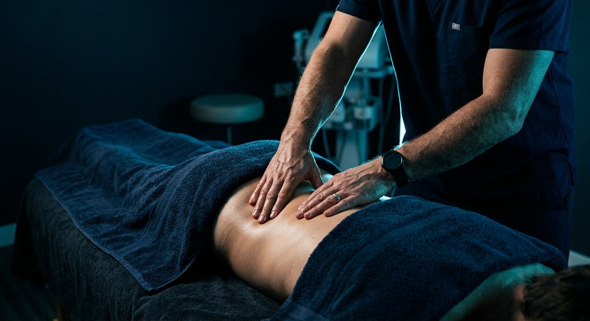

مزایای احتمالی این روش
دردها و مشکلاتی که ممکن است کمککننده باشد
انتخاب روش درمان به ارزیابی فیزیوتراپیست، علت و شدت علائم و شرایط پزشکی شما بستگی دارد. این روشها برای همه افراد مناسب نیستند و جایگزین ارزیابی تخصصی نمیشوند.

انتخاب روش درمان به ارزیابی فیزیوتراپیست، علت و شدت علائم و شرایط پزشکی شما بستگی دارد. این روشها برای همه افراد مناسب نیستند و جایگزین ارزیابی تخصصی نمیشوند.